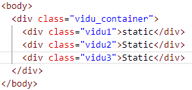

Position trong CSS được sử dụng với mục đích định vị vị trí hiển thị của các phần tử thẻ HTML và thường dùng trong việc xây dựng CSS cho menu nhiều cấp, tooltip và một số chức năng khác có liên quan đến vị trí.
Position static hay vị trí mặc định, đồng nghĩa với việc vị trí của phần tử này được xác định theo quy tắc thông thường của các tài liệu. Ta sẽ không thể sử dụng các thuộc tính CSS như: Top, Bottom, Left, Right để thiết lập vị trí cho phần tử đó. Ví dụ minh họa như bên dưới. Trong đó class "vidu2" để position static.
Kết quả:
Phần tử được định vị bằng Position relative sẽ nằm ở vị trí tương đối so với vị trí static. Ta có thể sử dụng các CSS như: Top, Bottom, Left, Right để định vị vị trí của phần tử đó. Ví dụ minh họa như bên dưới. Trong đó class "vidu2" để position relative.
Kết quả:
Phần tử được định vị bằng Position fixed sẽ có vị trí tương đối so với Viewport trên trình duyệt. Ví dụ minh họa như bên dưới. Trong đó class "vidu2" để position fixed.

Kết quả: Khung chữ "fixed" sẽ đứng cố định tại vị trí cách top:100px và left:15px của màn hình làm việc khi cuộn con lăn chuột.
Đối với một phần tử được định vị bằng Position absolute, phần tử sẽ tự động ưu tiên cho phần tử cha, ông gần nhất của chúng có chứa Position relative. Khi tìm thấy phần tử chứa Position relative, phần tử được định vị bằng Position absolute sẽ tự động tạo vị trí tương đối so với phần tử đó. Nếu không, phần tử định vị bằng Position absolute sẽ lấy vị trí tương đối so với Viewport trên trình duyệt của bạn. Trong đó class "vidu2" để position absolute.
Kết quả: Khung chữ "fixed" sẽ không đứng cố định tại màn hình làm việc khi cuộn trang.
Phần tử sẽ linh động chuyển đổi giữa hai trạng thái relative và fixed để thay đổi vị trí dựa trên thao tác cuộn của người dùng.. Trong đó class "vidu2" để position sticky.
Kết quả